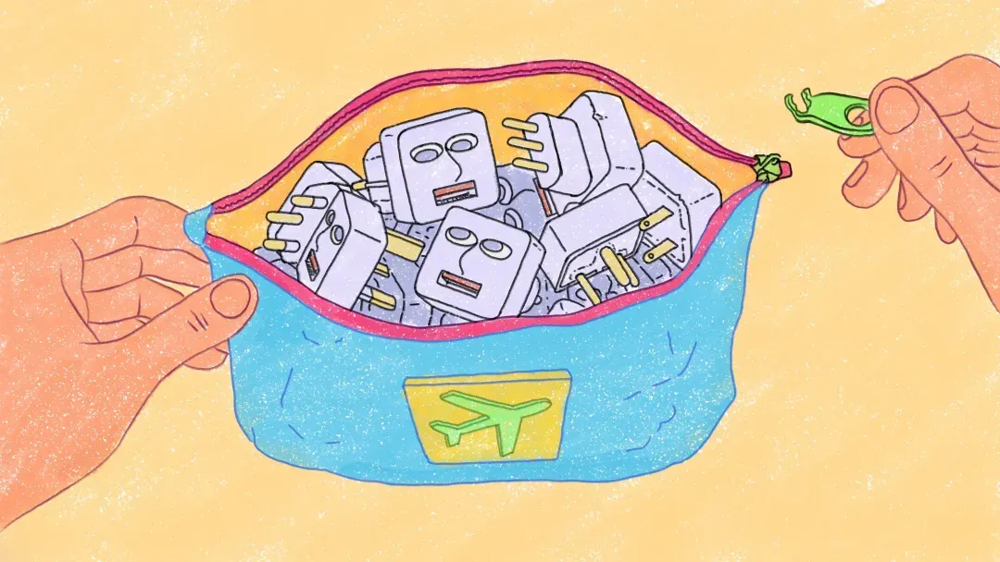
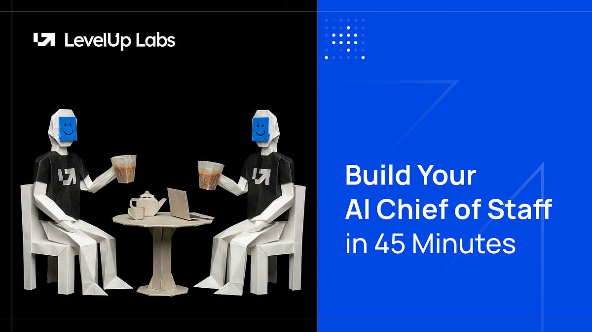
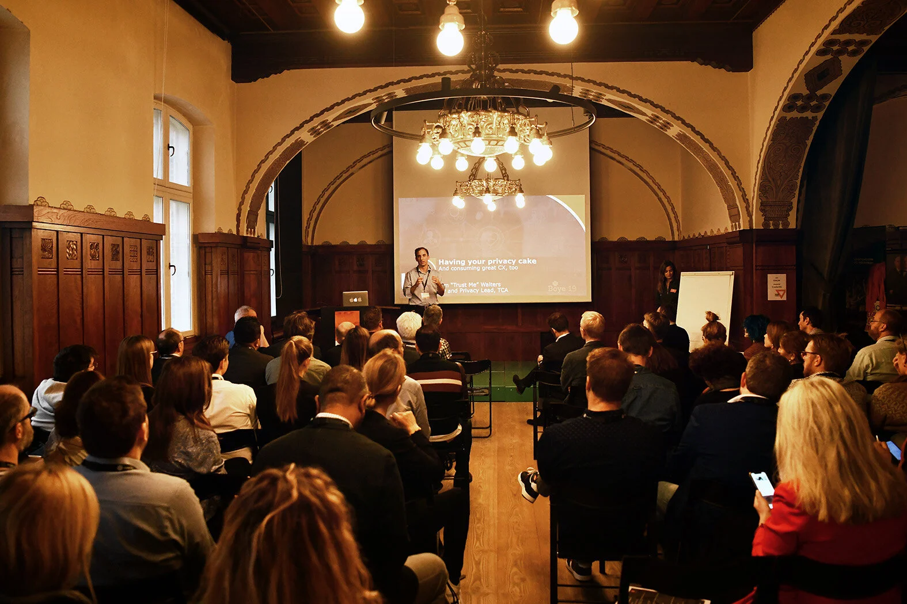

Writing
Publications for others, press and media coverage, and my own posts across LinkedIn and Substack.
Publications for others

Humanise by Plum
Around the world in 80 workdays

The Nuanced Perspective
Build your AI Chief of Staff in 45 minutes

Boye & Co
Five hard truths about AI in healthcare content and marketing
The Whole Truth
If obesity is universal, why does every country treat it differently?
Plain Sight by Wyzr
Cappuccinos and cultural codes
InTheKnow by INSEAD
MIMentos: three epiphanies from my last year
Recent press & media coverage
Graduateships
From INSEAD to Novo Nordisk: a journey of growth, challenge, and opportunity
Mint
Drugmakers ramp up ad campaigns to promote GLP-1s
Indian Express
Gen Z anxiety — the defining emotion
LinkedIn News India
Featured — careers in the healthcare sector
NewInAsia
Trending on NewInAsia
Frameworks & field notes
Want me to write for you?
I'm open to guest essays, publication collaborations, and commissioned long-form on cross-cultural strategy, AI in practice, and the human side of both.
workwithakshatkharbanda@gmail.com →